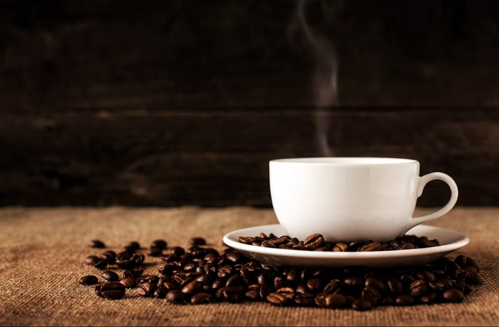

We are a coffee & beans shop, where you can find the main types of beans in the world, which are ethiopean coffee, which is considered one of the best coffee beans and they are cheap, or you can find colombian beans, which is expensive but very good taste, and finally you can find brazilian beans and they are very good and not very expensive or cheap like in the middle. And the best part is that you can have coffee in our shop, like cappuccino, or spresso, or latte
© Coffee shop, all rights reserved.